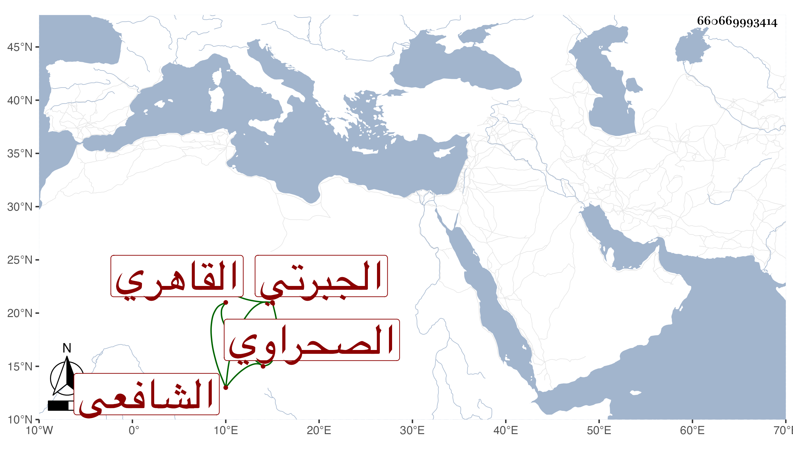

0902Sakhawi.DawLamic.ITO20230111-ara1.EIS1600.660669993414
Biography ID: 660669993414
أحمد بن أويس بن عبد الله بن صلوة شهاب الدين بن شرف الدين بن أكمل الدين الجبرتي ثم القاهري الصحراوي الشافعي مدرس تربة الست بالصحراء وإمامها وابن إمامها . مات في ربيع الأول سنة اثنتين أرخه شيخنا في أنبائه ، ورأيت بخطه إجازة لمن عرض عليه في سنة ثلاث وتسعين وسبعمائة وكذا للزين عبد الرحمن بن أحمد بن علي بن عبيد القلعي الصمل في سنة ثمانمائة وأبوه ممن أخذ عن ابن القاصح وغيره .
